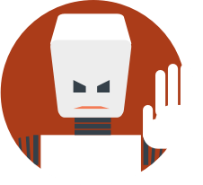

Please agree to this before downloading
SECURITY WARNINGS
You are responsible for your own computer security. If your machine is compromised you will lose your ether, access to any contracts and maybe more.
You are responsible for your own actions. If you mess something up or break any laws while using this software, it's your fault, and your fault only.
You are responsible for your own karma. Don't be a jerk and respect others.
LEGAL WARNING
SHORT VERSION
Disclaimer of Liabilities and Warranties
- The user expressly knows and agrees that the user is using the Ethereum platform at the user’s sole risk.
- The user represents that the user has an adequate understanding of the risks, usage and intricacies of cryptographic tokens and blockchain-based open source software, eth platform and eth.
- The user acknowledges and agrees that, to the fullest extent permitted by any applicable law, the disclaimers of liability contained herein apply to any and all damages or injury whatsoever caused by or related to risks of, use of, or inability to use, eth or the Ethereum platform under any cause or action whatsoever of any kind in any jurisdiction, including, without limitation, actions for breach of warranty, breach of contract or tort (including negligence) and that neither Stiftung Ethereum nor Ethereum team shall be liable for any indirect, incidental, special, exemplary or consequential damages, including for loss of profits, goodwill or data.
- Some jurisdictions do not allow the exclusion of certain warranties or the limitation or exclusion of liability for certain types of damages. therefore, some of the above limitations in this section may not apply to a user. In particular, nothing in these terms shall affect the statutory rights of any user or exclude injury arising from any willful misconduct or fraud of Stiftung Ethereum.
LONG VERSION
The following Terms and Conditions (“Terms”) govern the use of the Ethereum open source software platform (“Ethereum Platform”). Prior to any use of the Ethereum Platform, the User confirms to understand and expressly agrees to all of the Terms. All capitalized terms in this agreement will be given the same effect and meaning as in the Terms. The group of developers and other personnel that is now, or will be, employed by, or contracted with, Stiftung Ethereum (“Stiftung Ethereum”) is termed the “Ethereum Team.” The Platform will be developed by persons and entities who support Ethereum, including both volunteers and developers who are paid by nonprofit entities interested in supporting the Ethereum Platform.
The user acknowledges the following serious risks to any use the Ethereum Platform and ETH and expressly agrees not to hold liable Ethereum Stiftung or Ethereum Team should any of these risks occur:
Risk of Regulatory Actions in One or More Jurisdictions
The Ethereum Platform and ETH could be impacted by one or more regulatory inquiries or regulatory action, which could impede or limit the ability of Stiftung Ethereum to continue to develop the Ethereum Platform, or which could impeded or limit the ability of User to use Ethereum Platform or ETH.
Risk of Alternative, Unofficial Ethereum Networks
It is possible that alternative Ethereum-based networks could be established, which utilize the same open source source code and open source protocol underlying the Ethereum Platform. The Ethereum network may compete with these alternative Ethereum-based networks, which could potentially negatively impact the Ethereum Platform and ETH.
Risk of Insufficient Interest in the Ethereum Platform or Distributed Applications
It is possible that the Ethereum Platform will not be used by a large number of external businesses, individuals, and other organizations and that there will be limited public interest in the creation and development of distributed applications. Such a lack of interest could impact the development of the Ethereum Platform and potential uses of ETH. It cannot predict the success of its own development efforts or the efforts of other third parties.
Risk that the Ethereum Platform, As Developed, Will Not Meet the Expectations of User
The User recognizes that the Ethereum Platform is under development and may undergo significant changes before release. User acknowledges that any expectations regarding the form and functionality of the Ethereum Platform held by the User may not be met upon release of the Ethereum Platform, for any number of reasons including a change in the design and implementation plans and execution of the implementation of the Ethereum Platform.
Risk of Security Weaknesses in the Ethereum Platform Core Infrastructure Software
The Ethereum Platform rests on open-source software, and there is a risk that the Ethereum Stiftung or the Ethereum Team, or other third parties not directly affiliated with the Stiftung Ethereum, may introduce weaknesses or bugs into the core infrastructural elements of the Ethereum Platform causing the system to lose ETH stored in one or more User accounts or other accounts or lose sums of other valued tokens issued on the Ethereum Platform.
Risk of Weaknesses or Exploitable Breakthroughs in the Field of Cryptography
Cryptography is an art, not a science. And the state of the art can advance over time Advances in code cracking, or technical advances such as the development of quantum computers, could present risks to cryptocurrencies and the Ethereum Platform, which could result in the theft or loss of ETH. To the extent possible, Stiftung Ethereum intends to update the protocol underlying the Ethereum Platform to account for any advances in cryptography and to incorporate additional security measures, but it cannot predict the future of cryptography or guaranty that any security updates will be made, timely or successful.
Risk of Ether Mining Attacks
As with other cryptocurrencies, the blockchain used for the Ethereum Platform is susceptible to mining attacks, including but not limited to double-spend attacks, majority mining power attacks, “selfish-mining” attacks, and race condition attacks. Any successful attacks present a risk to the Ethereum Platform, expected proper execution and sequencing of ETH transactions, and expected proper execution and sequencing of contract computations. Despite the efforts of the Ethereum Stiftung and Team, known or novel mining attacks may be successful.
Risk of Rapid Adoption and Increased Demand
If the Ethereum Platform is rapidly adopted, the demand for ETH could rise dramatically and at a pace that exceeds the rate with which ETH miners can create new ETH tokens. Under such a scenario, the entire Ethereum Platform could become destabilized, due to the increased cost of running distributed applications. In turn, this could dampen interest in the Ethereum Platform and ETH. Instability in the demand of for ETH may lead to a negative change of the economical parameters of an Ethereum based business which could result in the business being unable to continue to operate economically or to cease operation.
Risk of Rapid Adoption and Insufficiency of Computational Application Processing Power on the Ethereum Platform
If the Ethereum Platform is rapidly adopted, the demand for transaction processing and distributed application computations could rise dramatically and at a pace that exceeds the rate with which ETH miners can bring online additional mining power. Under such a scenario, the entire Ethereum Platform could become destabilized, due to the increased cost of running distributed applications. In turn, this could dampen interest in the Ethereum Platform and ETH. Insufficiency of computational resources and an associated rise in the price of ETH could result in businesses being unable to acquire scarce computational resources to run their distributed applications. This would represent revenue losses to businesses or worst case, cause businesses to cease operations because such operations have become uneconomical due to distortions in the crypto-economy.
Acknowledgment, Acceptance of all Risks and Disclaimer of Warranties and Liabilities
THE USER EXPRESSLY KNOWS AND AGREES THAT THE USER IS USING THE Ethereum PLATFORM AT THE USER’S SOLE RISK. THE USER REPRESENTS THAT THE USER HAS AN ADEQUATE UNDERSTANDING OF THE RISKS, USAGE AND INTRICACIES OF CRYPTOGRAPHIC TOKENS AND BLOCKCHAIN-BASED OPEN SOURCE SOFTWARE, ETH PLATFORM AND ETH. THE USER ACKNOWLEDGES AND AGREES THAT, TO THE FULLEST EXTENT PERMITTED BY ANY APPLICABLE LAW, THE DISCLAIMERS OF LIABILITY CONTAINED HEREIN APPLY TO ANY AND ALL DAMAGES OR INJURY WHATSOEVER CAUSED BY OR RELATED TO RISKS OF, USE OF, OR INABILITY TO USE, ETH OR THE Ethereum PLATFORM UNDER ANY CAUSE OF ACTION WHATSOEVER OF ANY KIND IN ANY JURISDICTION, INCLUDING, WITHOUT LIMITATION, ACTIONS FOR BREACH OF WARRANTY, BREACH OF CONTRACT OR TORT (INCLUDING NEGLIGENCE) AND THAT NEITHER Stiftung Ethereum NOR ETHEREUM TEAM SHALL BE LIABLE FOR ANY INDIRECT, INCIDENTAL, SPECIAL, EXEMPLARY OR CONSEQUENTIAL DAMAGES, INCLUDING FOR LOSS OF PROFITS, GOODWILL OR DATA. SOME JURISDICTIONS DO NOT ALLOW THE EXCLUSION OF CERTAIN WARRANTIES OR THE LIMITATION OR EXCLUSION OF LIABILITY FOR CERTAIN TYPES OF DAMAGES. THEREFORE, SOME OF THE ABOVE LIMITATIONS IN THIS SECTION MAY NOT APPLY TO A USER. IN PARTICULAR, NOTHING IN THESE TERMS SHALL AFFECT THE STATUTORY RIGHTS OF ANY USER OR EXCLUDE INJURY ARISING FROM ANY WILLFUL MISCONDUCT OR FRAUD OF Stiftung Ethereum.
Risk of temporary network incoherence
We recommend any groups handling large or important transactions to maintain a voluntary 24 hour waiting period on any ether deposited. In case the integrity of the network is at risk due to issues in the clients, we will endeavor to publish patches in a timely fashion to address the issues. We will endeavour to provide solutions within the voluntary 24 hour waiting period.
Dispute Resolution
All disputes or claims arising out of, relating to, or in connection with the Terms, the breach thereof, or use of the Ethereum Platform shall be finally settled under the Rules of Arbitration of the International Chamber of Commerce by one or more arbitrators appointed in accordance with said Rules. All claims between the parties relating to these Terms that are capable of being resolved by arbitration, whether sounding in contract, tort, or otherwise, shall be submitted to ICC arbitration. Prior to commencing arbitration, the parties have a duty to negotiate in good faith and attempt to resolve their dispute in a manner other than by submission to ICC arbitration. The arbitration panel shall consist of one arbitrator only, unless the ICC Court of Arbitration determines that the dispute is such as to warrant three arbitrators. If the Court determines that one arbitrator is sufficient, then such arbitrator shall be Swiss resident. If the Court determines that three arbitrators are necessary, then each party shall have 30 days to nominate an arbitrator of its choice -- in the case of the Claimant, measured from receipt of notification of the ICC Court’s decision to have three arbitrators; in the case of Respondent, measured from receipt of notification of Claimant’s nomination. All nominations must be Swiss resident. If a party fails to nominate an arbitrator, the Court will do so. The Court shall also appoint the chairman. All arbitrators shall be and remain “independent” of the parties involved in the arbitration. The place of arbitration shall be Zug, Switzerland. The language of the arbitration shall be English. In deciding the merits of the dispute, the tribunal shall apply the laws of Switzerland and any discovery shall be limited and shall not involve any depositions or any other examinations outside of a formal hearing. The tribunal shall not assume the powers of amiable compositeur or decide the case ex aequo et bono. In the final award, the tribunal shall fix the costs of the arbitration and decide which of the parties shall bear such costs in what proportion. Every award shall be binding on the parties. The parties undertake to carry out the award without delay and waive their right to any form of recourse against the award in so far as such waiver can validly be made.
Force Majeure
Stiftung Ethereum is finally not liable for:
- unavoidable casualty,
- delays in delivery of materials,
- embargoes,
- government orders,
- acts of civil or military authorities,
- lack of energy, or
- any similar unforeseen event that renders performance commercially implausible.